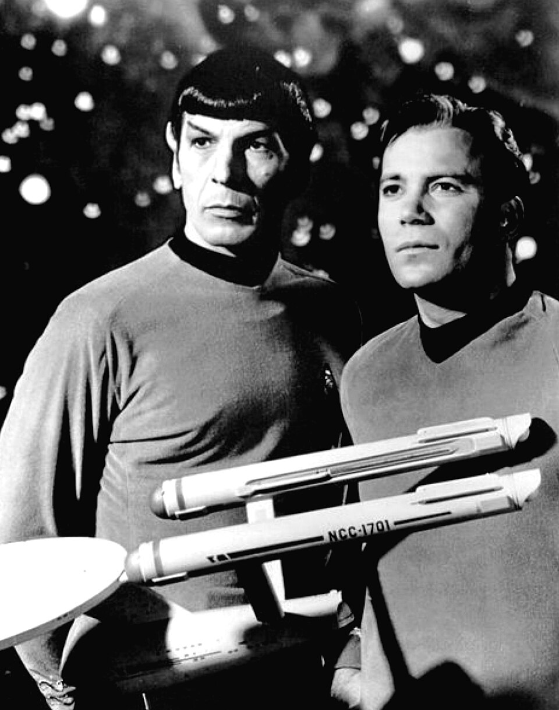
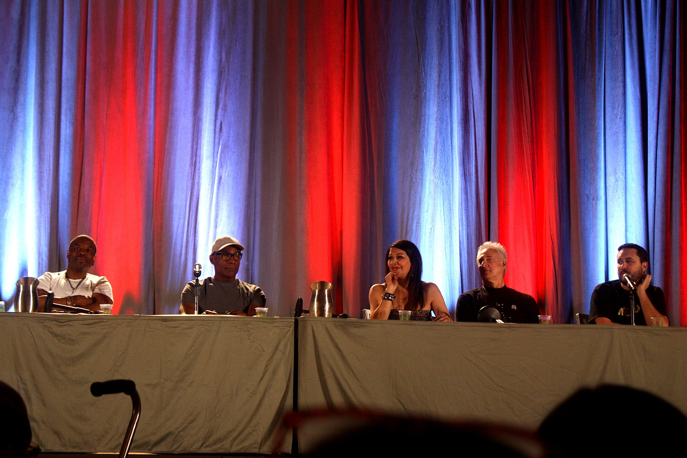
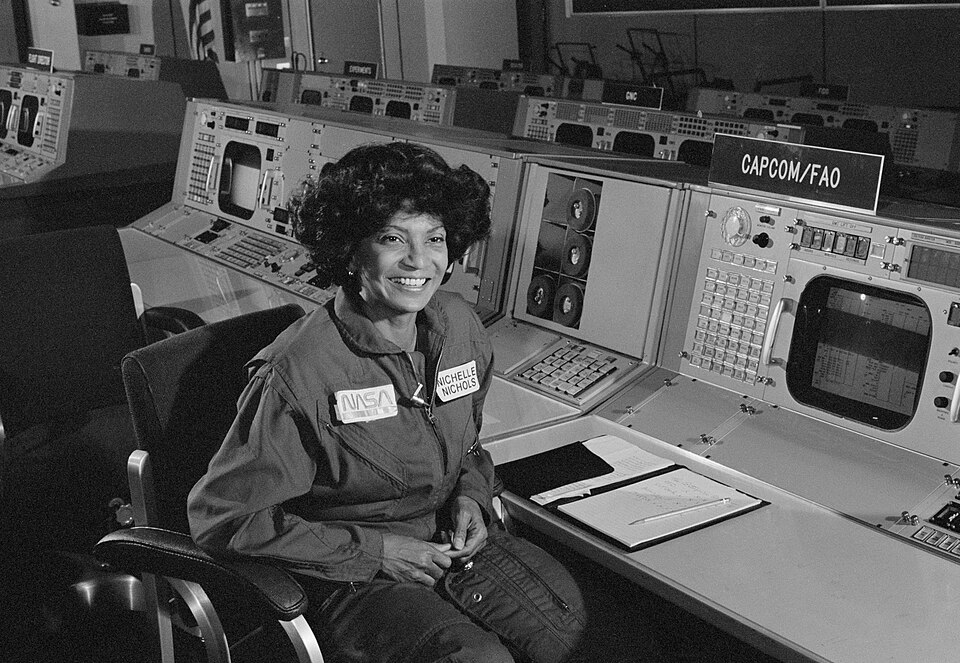
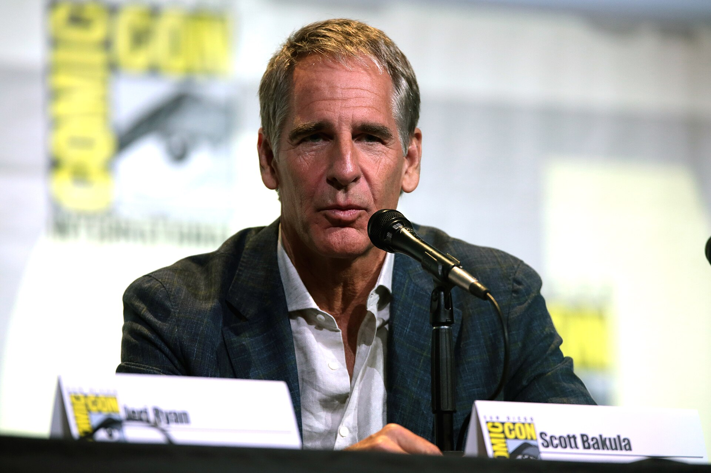
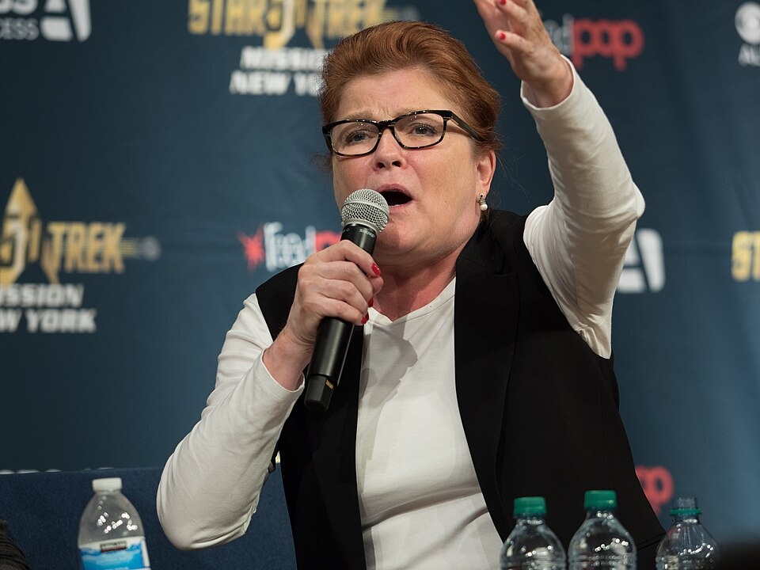
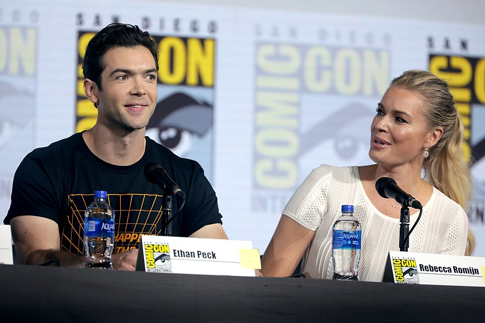
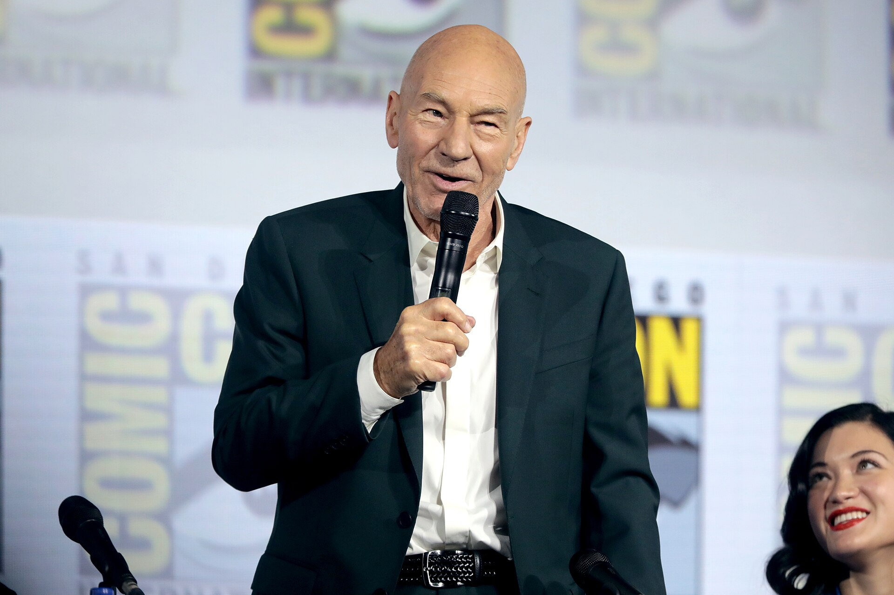
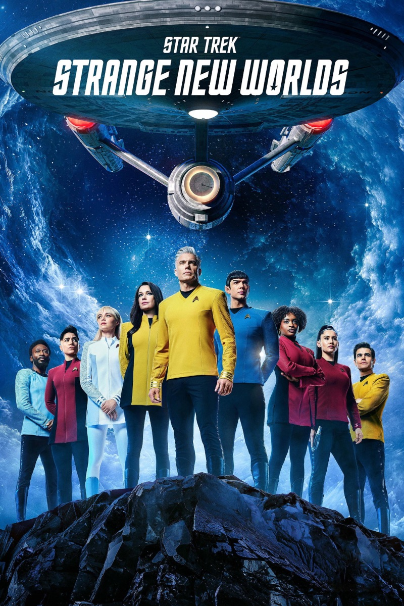
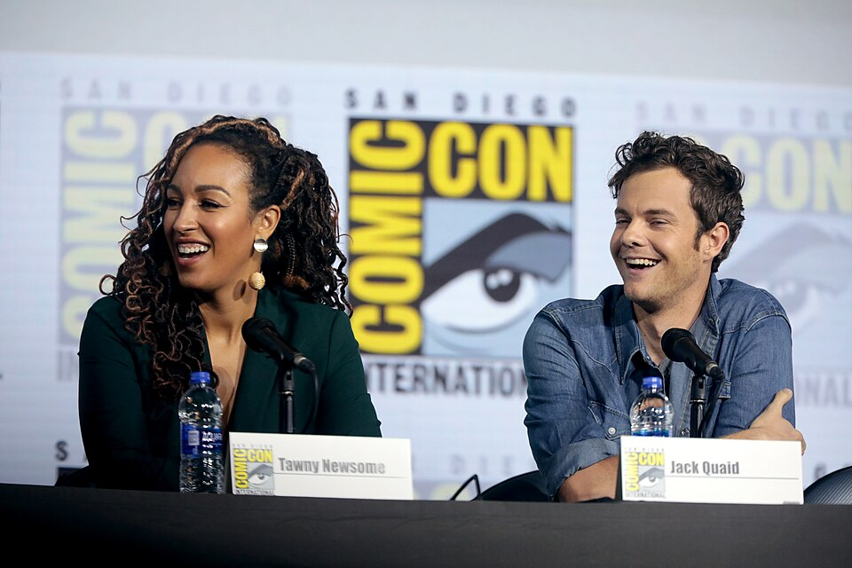
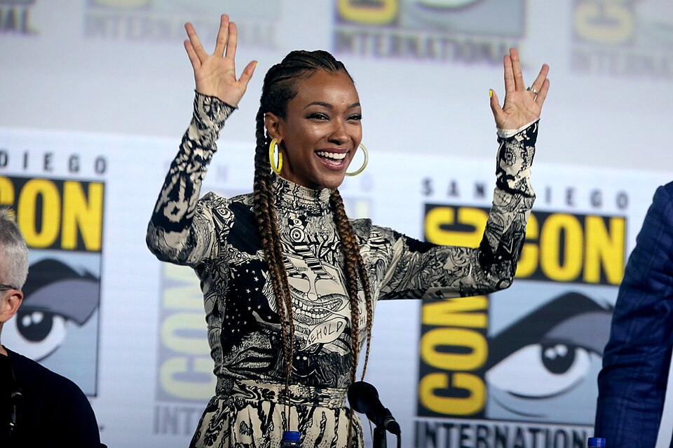

Star trek
Sixty years of boldly going · 1966-2026
Sixty years of boldly going · 1966-2026

1966-1969
Kirk, Spock and a five-year mission

1973-1974
Most of the original cast came back as voices


1993-1999
A space station next to a wormhole
1995-2001
Lost 70,000 light-years from home


2018-2020
Short stories between the seasons

2020-2023
One last mission for Jean-Luc
2020-2024
The ensigns who do the real work

2022-
Captain Pike`s Enterprise

2021-2024
Young misfits find a lost starship
2017-2024
Captain Burnham and the spore drive
